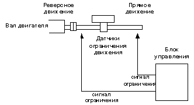

Установка ограничения перемещения
Если существуют механическое ограничение перемещения, то использование этой функции позволит предотвратить выход системы за пределы установленных границ.
Датчики на ограничение перемещения подключаются ко входам блока управления (отдельные входы ля ограничения движения в прямом и реверсном направлениях). Пока на входы блока управления поступает сигнал, движение в заданном направлении разрешено. При снятии сигнала движение прекращается.

Таким образом, при выходе рабочего органа машины за пределы хода сигнал переходит в состояние OFF. Этот сигнал может использоваться внешним контроллером для прекращения подачи задающего сигнала.